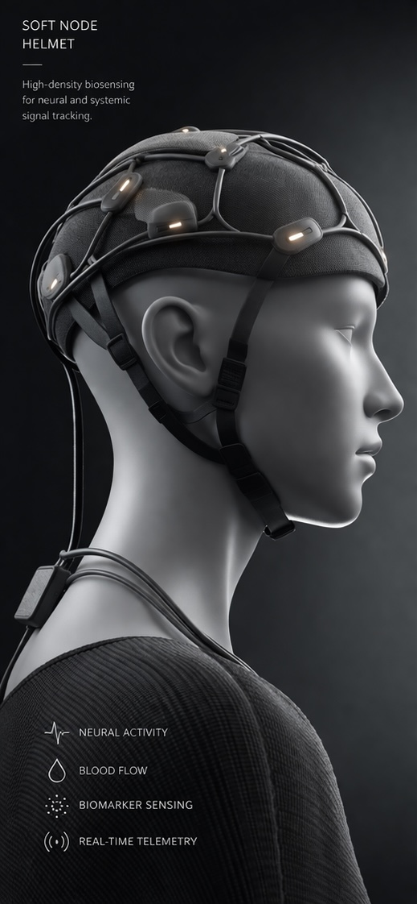
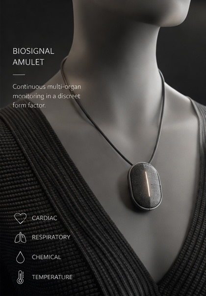
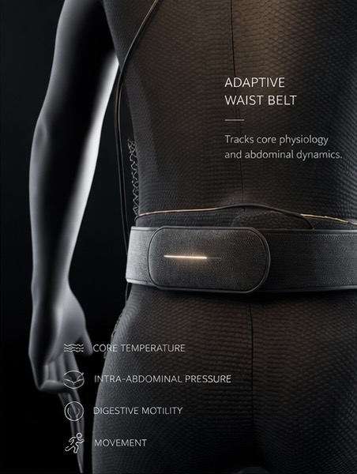
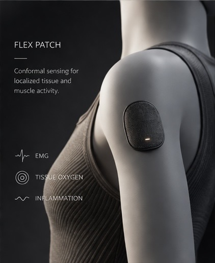
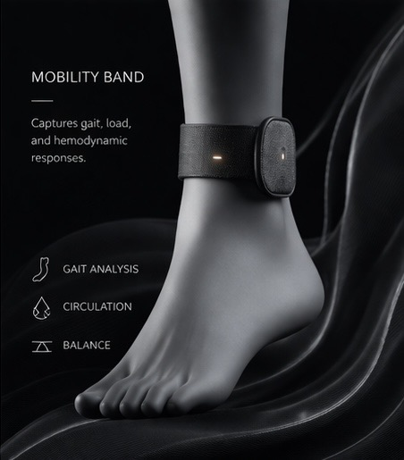

Continuous, non-invasive monitoring of treatment-conditioned biological response.
AI struggles when the biology that determines patient response is unobserved. We build wearables that make that biology visible.
Instead of asking imaging alone to infer future trajectory, Conquer Medical captures the physiological signals through which treatment response is actually expressed: neural activity, circulation, respiration, temperature, tissue oxygenation, motion, and other continuous markers of biological state.
Each device is designed to surface biological response in a form that can be monitored continuously, interpreted clinically, and integrated into patient-specific AI systems.





Our approach is not to ask AI to infer missing biology from static data. It is to instrument the patient continuously so treatment response becomes part of the observed state.
Wearables capture longitudinal physiological signals across treatment, activity, rest, and recovery, creating a live record of response dynamics rather than isolated snapshots.
Continuous data streams allow AI systems to learn how this patient responds, not merely how similar patients were labelled in historical datasets.
The aim is safer and more specific monitoring of treatment-conditioned biology in oncology, neurology, and other settings where trajectory matters as much as diagnosis.
We welcome conversation with clinicians, engineers, translational researchers, and strategic partners interested in wearable systems for patient-specific biological monitoring.